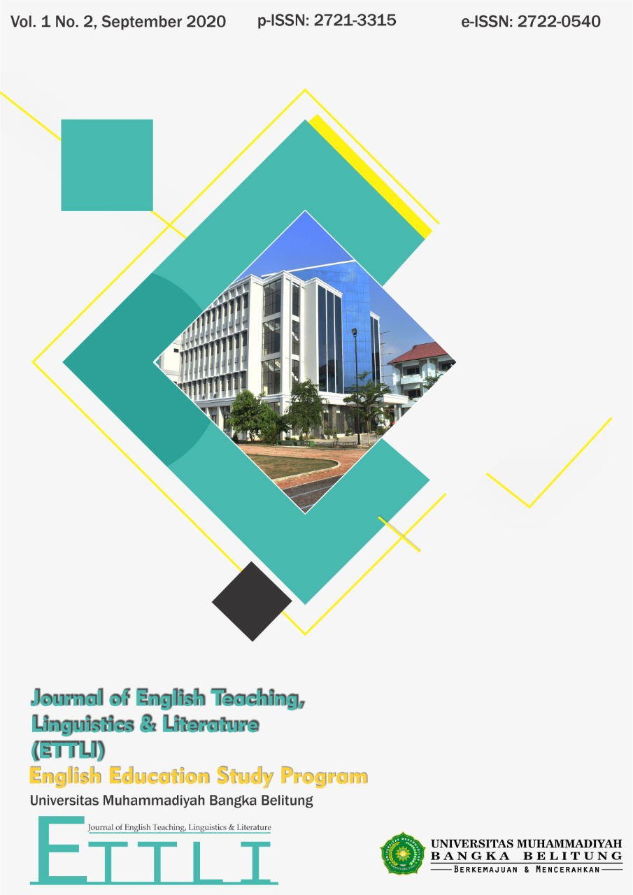
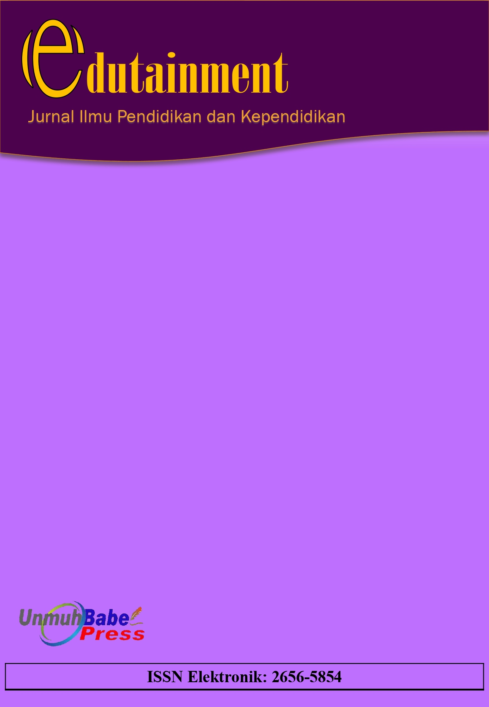
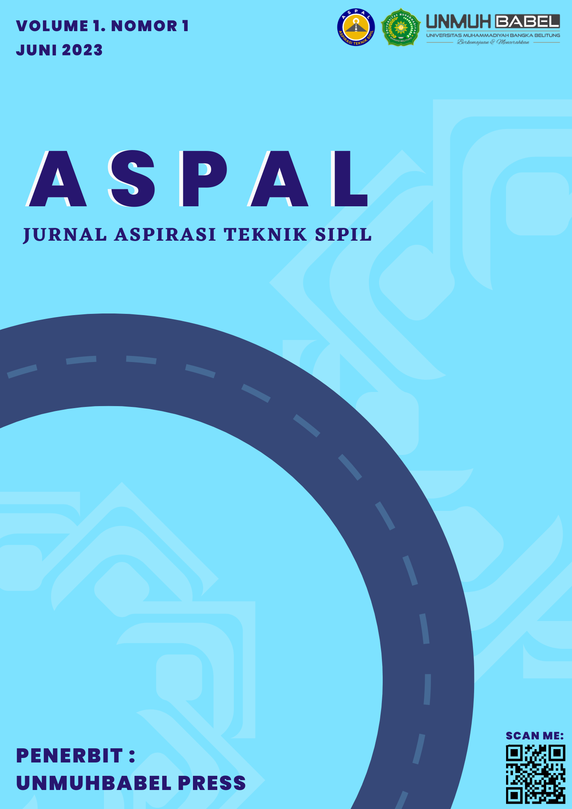
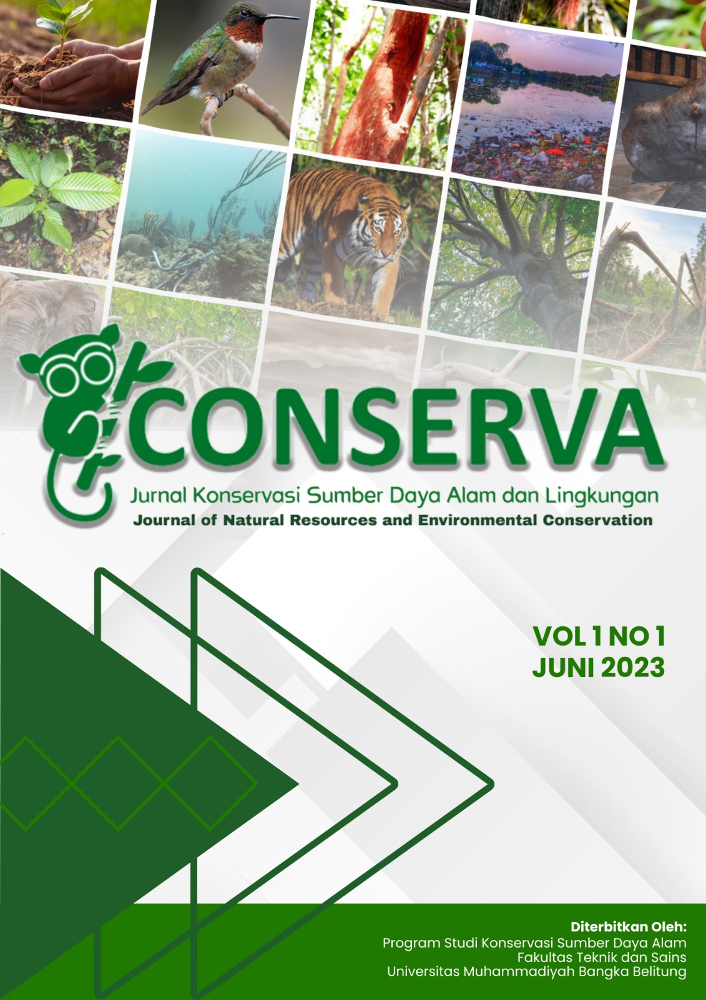
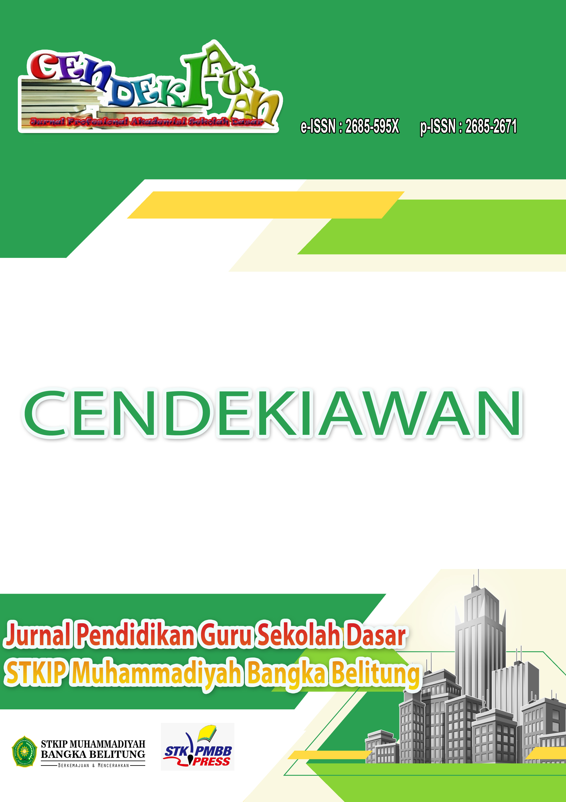
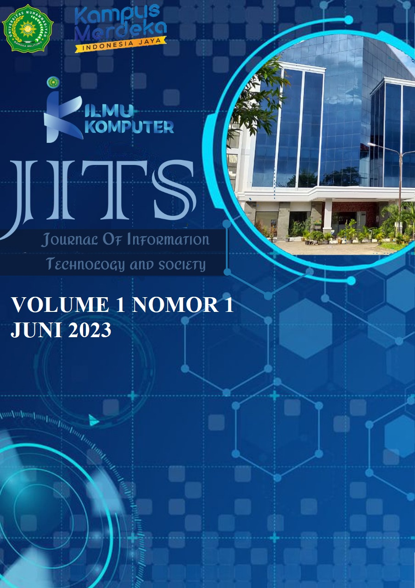
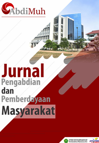

JURNAL SPARTA
Jurnal ilmiah ini bernama “SPARTA” dengan fokus ilmu di bidang Pendidikan Jasmani Kesehatan dan Rekreasi

JURNAL ETTLI
Journal of English Language Teaching, Linguistics, and Literature (e-ISSN: 2722-0540 and p-ISSN 2721-3315) is a biannual journal publication run by the English Education Study Program of Universitas Muhammadiyah Bangka Belitung.
JURNAL EDUTAINMENT
Edutainment : Jurnal Ilmu Pendidikan dan Kependidikan merupakan open access journal yang fokus pada hasil penelitian dosen, guru, atau praktisi tentang ilmu pendidikan dan kependidikan.
JURNAL ASPAL
Jurnal Aspirasi Teknik Sipil merupakan wadah bagi para peneliti, dosen, praktisi, dan mahasiswa dalam publikasi hasil penelitian terkait dengan bidang Teknik Sipil.
JURNAL CONSERVA
CONSERVA adalah jurnal akademik yang diterbitkan online dan cetak dua kali setahun, Juni dan Desember oleh UNMUHBABEL PRESS dengan pengelola Program Studi Konservasi Sumberdaya Alam Fakultas Teknik dan Sains Universitas Muhammadiyah Bangka Belitung. Jurnal ini fokus pada tulisan berkaitan dengan hasil penelitian dan kajian analitis kritis pada bidang konservasi hayati dan rehabilitasi lingkungan.
JURNAL CENDEKIAWAN
Cendekiawan journal is regularly published in June and December. Publish papers relating to the results of research and critical analytical studies on the results of research and literature reviews of teachers, lecturers and other education practitioners relating to education in elementary schools.
JURNAL JITS
Jurnal ini mempublikasikan artikel-artikel ilmiah yang berkaitan dengan bidang Komputer dan Teknologi Informasi dengan scope Artificial Intellegent, Data Science, Internet Of Thinking(IOT), Rekayasa Perangkat Lunak, Jaringan Komputer, Elektronika dan Sistem Kontrol, Multimedia dan Pengolahan Citrat Digital serta bidang lainnya yang relevan.
JURNAL ABDIMUH
AbdiMuh : Jurnal AbdiMuh adalah Jurnal yang Diterbitkan oleh LPPM Universitas Muhammadiyah Bangka Belitung, Bangka Tengah, Indonesia. Jurnal AbdiMuh merupakan jurnal yang open access dan peer review yang berfokus pada hasil Pengabdian dan Pemberdayaan Masyarakat.
